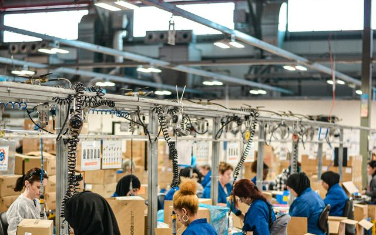

9 projects across a variety of fields. 9 proyectos en una variedad de campos.
A synthetic hospital database for practising SQL: 17 linked tables, no real patient data, checked against 59 consistency rules. The table layout follows published hospital-database designs; every number and proportion is chosen, not measured from real hospitals.
Base de datos hospitalaria sintética para practicar SQL: 17 tablas relacionadas, sin datos reales de pacientes, verificada con 59 reglas de consistencia. El diseño de las tablas sigue diseños publicados de bases de datos hospitalarias; todos los números y proporciones son elegidos, no medidos en hospitales reales.
Bot-flagged accounts wrote 36% of 2.7M stock tweets, and their sentiment shows no detectable correlation with price moves; the other accounts' sentiment correlates +0.15 to +0.33 with abnormal returns, mostly on the same day — an extension of my grad-school paper that adds the bot detection it lacked.
Las cuentas señaladas como bots escribieron el 36% de 2,7 millones de tuits sobre acciones, y su sentimiento no muestra una correlación detectable con los movimientos de precio; el sentimiento del resto de las cuentas se correlaciona entre +0,15 y +0,33 con los rendimientos anormales, sobre todo el mismo día — una extensión de mi trabajo de posgrado que añade la detección de bots que le faltaba.
ARIMA vs. LightGBM on retail demand — documenting where ARIMA's stationarity assumptions break on promotion- and holiday-driven sales data.
ARIMA frente a LightGBM en la demanda minorista — documentando dónde fallan los supuestos de estacionariedad de ARIMA ante datos de ventas impulsados por promociones y días festivos.
Text-to-SQL interface over a normalized analytical schema — plain-English questions translated to validated SQL via an LLM query layer.
Interfaz de texto a SQL sobre un esquema analítico normalizado — preguntas en lenguaje natural traducidas a SQL validado mediante una capa de consultas basada en LLM.
A price model on these 990 Miami-Dade and Broward sales reached R² 0.82 but missed by about 28% per home and couldn't price by location reliably (about 7 sales per ZIP), so the dashboard now shows what the sales say: medians by ZIP and property type, with the sample size behind every number.
Un modelo de precios con estas 990 ventas de Miami-Dade y Broward alcanzó R² 0,82, pero se equivocaba cerca del 28% por vivienda y no podía fijar precios por ubicación de forma fiable (unas 7 ventas por código postal), así que el panel ahora muestra lo que dicen las ventas: medianas por código postal y tipo de propiedad, con el tamaño de muestra detrás de cada cifra.
Multilingual (English + Spanish) sentiment and topic modeling across Miami/Orlando hotel reviews — reputation scoring and competitor benchmarking.
Modelado multilingüe (inglés y español) de sentimiento y temas en reseñas de hoteles de Miami/Orlando — puntuación de reputación y comparación con la competencia.
US citrus bearing acreage fell 63% from its 1997 peak to 2026, and the industry moved west: Florida's share of the value of production fell from 54% to 9% since 1990, while California's rose from 41% to 87%.
La superficie cítrica productiva de EE. UU. cayó 63% desde su máximo de 1997 hasta 2026, y la industria se desplazó hacia el oeste: la participación de Florida en el valor de la producción bajó de 54% a 9% desde 1990, mientras que la de California subió de 41% a 87%.
311,507 paid Florida flood-insurance claims (1978 to 2026, in 2025 dollars): what they paid, which storms cost the most, and which building and flood factors go with larger payouts. The median paid claim rose from about $4,800 in 1978-79 to about $78,000 in 2020-26.
311.507 reclamos pagados de seguro contra inundaciones en Florida (1978 a 2026, en dólares de 2025): cuánto pagaron, qué tormentas costaron más y qué factores del edificio y de la zona de inundación acompañan pagos mayores. El reclamo pagado mediano pasó de cerca de $4.800 en 1978-79 a cerca de $78.000 en 2020-26.

11 years of BLS employment and wage data for about 800 US occupations, adjusted for inflation. In 2021–22 pay fell behind prices for about 80% of occupations, and 2020 hit very unevenly: Waiters and Waitresses fell 30 points below their earlier trend, Registered Nurses 3.
11 años de datos de empleo y salarios del BLS para unas 800 ocupaciones de EE. UU., ajustados por inflación. En 2021–22 el salario quedó por debajo de los precios en cerca del 80% de las ocupaciones, y 2020 golpeó de forma muy desigual: Waiters and Waitresses (meseros) cayeron 30 puntos por debajo de su tendencia previa, Registered Nurses (enfermeros) 3.